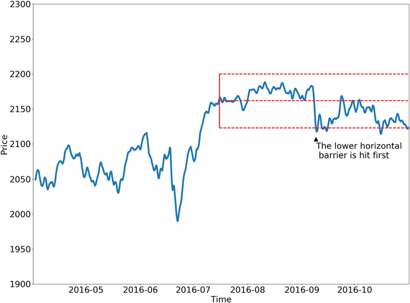
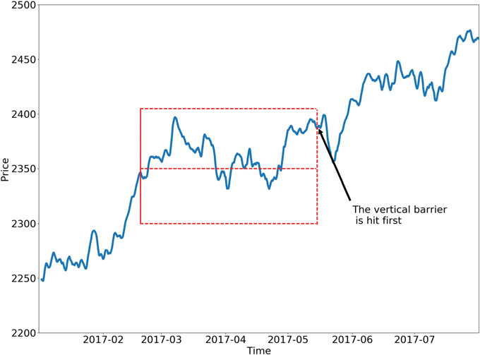
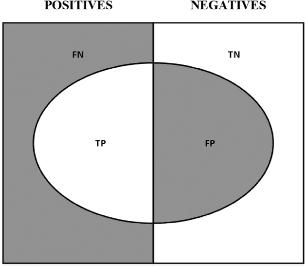

第一部分：数据分析
标签化
3.1 为什么需要给金融数据加标签
第 2 章介绍了怎样把非结构化数据集整理成金融特征矩阵 \(X\)。无监督学习算法可以从矩阵 \(X\)中寻找规律，例如判断数据是否存在层次聚类。监督学习算法则不同，它要求矩阵 \(X\)中的每一行都对应一组标签或数值 \(y\)，这样才能根据未见过的特征样本预测这些标签或数值。本章将介绍怎样给金融数据加标签。
3.2 固定时间跨度法
在金融领域，几乎所有 ML 论文都用固定时间跨度法给观测值加标签。具体做法如下。假设有一个特征矩阵 \(X\)，它有 \(I\)行，记作 \(\{X_i\}_{i=1,\ldots,I}\)。这些行来自若干数据条（bar），其索引为 \(t=1,\ldots,T\)，且 \(I\le T\)。第 2 章第 2.5 节介绍了怎样通过采样得到特征集合 \(\{X_i\}_{i=1,\ldots,I}\)。对观测值 \(X_i\)赋予标签 \(y_i\in\{-1,0,1\}\)：
其中，\(\tau\)是预先设定的常数阈值；\(t_{i,0}\)是 \(X_i\)出现后紧接着的 bar 索引；\(t_{i,0}+h\)表示往后经过 \(h\)个 bar 时对应的索引，起点为 \(t_{i,0}\)；\(r_{t_{i,0},t_{i,0}+h}\)是价格收益率，对应的 bar 跨度为 \(h\)：
文献几乎总以时间条/time bar 为基础，因此 \(h\)对应固定的时间跨度。参考书目列出了多项 ML 研究，Dixon 等人 [2016]的研究是这种标签法较新的例子。这个方法虽然很流行，但多数情况下并不适用，原因有好几个。第一，第 2 章已经说明，时间条/time bar 的统计性质并不好。第二，同一个阈值 \(\tau\)不会随观测到的波动率变化。假设 \(\tau=1E-2\)。有时我们把某个观测值标为 \(y_i=1\)，此时已实现的 bar 波动率只有 \(\sigma_{t_{i,0}}=1E-4\) （例如夜盘时段）；有时波动率却达到 \(\sigma_{t_{i,0}}=1E-2\) （例如开盘前后）。因此，绝大多数标签都会是 \(0\)，即使收益率 \(r_{t_{i,0},t_{i,0}+h}\)本来可以预测，而且在统计上显著。
换句话说，在时间条/time bar 上按固定阈值加标签，是一种非常常见的错误。有两种更好的办法。第一，使用随市场变化的阈值 \(\sigma_{t_{i,0}}\)，用收益率的滚动指数加权标准差来估计。第二，改用成交量条或成交额条，因为这两类数据条的波动率更接近常数，也就是更接近同方差。不过，这两项改进仍漏掉了固定时间跨度法的一个关键缺陷：价格走过的路径。任何投资策略都有止损约束：可能由投资组合经理自行设置，也可能由风控部门强制执行，或因追加保证金通知而触发强制平仓。一个仓位若途中本应止损或被交易所强平，就不能假设它能一直持有到后来获利；据此设计策略并不现实。几乎没有论文在加标签时考虑这一点，这也反映了当前投资研究文献的状况。
3.3 计算动态阈值
上一节已经说明，在实际交易中，止盈和止损限额应随一笔交易承担的风险而变化。否则，相对于当前波动率，我们有时会把目标定得太高（\(\tau\gg\sigma_{t_{i,0}}\)），有时又定得太低（\(\tau\ll\sigma_{t_{i,0}}\)）。代码清单 3.1 在各个日内估计时点计算日波动率：计算指数加权移动标准差时，将窗口跨度设为 span0天。关于 pandas.Series.ewm函数的细节，参见 pandas 文档。
def getDailyVol(close,span0=100):
# daily vol, reindexed to close
df0=close.index.searchsorted(close.index-pd.Timedelta(days=1))
df0=df0[df0>0]
df0=pd.Series(close.index[df0-1], index=close.index[close.shape[0]-df0.shape[0]:])
df0=close.loc[df0.index]/close.loc[df0.values].values-1 # daily returns
df0=df0.ewm(span=span0).std()
return df0在本章后面的内容中，我们可以用这个函数的输出设置默认的止盈和止损限额。
3.4 三重障碍法
下面介绍一种我尚未在文献中见过的替代标签法。如果你从事投资实务，应该会觉得它更符合真实交易。我把它称为三重障碍法，因为它根据三道障碍中最先触及的一道给观测值加标签。首先设置两道水平障碍和一道垂直障碍。两道水平障碍分别对应止盈和止损限额，其位置随估计波动率动态变化，这里的波动率既可以是已实现波动率，也可以是隐含波动率。第三道障碍由建仓后经过的 bar 数决定，相当于到期限制。如果最先触及上方障碍，就把观测值标为 \(1\)；如果最先触及下方障碍，就标为 \(-1\)；如果最先触及垂直障碍，则有两种选择：用收益率的正负号作为标签，或者标为 \(0\)。
我个人倾向于前一种做法，因为它能反映仓位在限额以内最终是盈利还是亏损；但在你的具体问题中，也应检验把标签设为 \(0\)是否效果更好。可以看出，三重障碍法具有路径依赖性。要给一个观测值加标签，必须考察整个价格路径，对应的时间区间是 \([t_{i,0},t_{i,0}+h]\)，且 \(h\)定义了垂直障碍，也就是到期限制。我们用 \(t_{i,1}\)表示首次触及任一障碍的时刻，与该观测特征对应的收益率为 \(r_{t_{i,0},t_{i,1}}\)。明确地说，\(t_{i,1}\le t_{i,0}+h\)，而且两道水平障碍不一定对称。
代码清单 3.2 实现了三重障碍法。函数接收四个参数：
close：pandas 价格序列。events：pandas DataFrame，包含以下列：t1：垂直障碍的时间戳。值为np.nan时，表示不设置垂直障碍。trgt：水平障碍的单位宽度。
ptSl：由两个非负浮点数组成的列表：ptSl[0]：与trgt相乘后得到上方障碍的宽度。若为 0，则不设置上方障碍。ptSl[1]：与trgt相乘后得到下方障碍的宽度。若为 0，则不设置下方障碍。
molecule：一个事件索引子集列表，其中的事件将由单个线程处理。它的用途会在本章后面说明。
def applyPtSlOnT1(close, events, ptSl, molecule):
# apply stop loss/profit taking, if it takes place before t1 (end of event)
events_ = events.loc[molecule]
out = events_[['t1']].copy(deep=True)
if ptSl[0] > 0:
pt = ptSl[0] * events_['trgt']
else:
pt = pd.Series(index=events.index) # NaNs
if ptSl[1] > 0:
sl = -ptSl[1] * events_['trgt']
else:
sl = pd.Series(index=events.index) # NaNs
for loc, t1 in events_['t1'].fillna(close.index[-1]).iteritems():
df0 = close[loc:t1] # path prices
df0 = (df0 / close[loc] - 1) * events_.at[loc, 'side'] # path returns
out.loc[loc, 'sl'] = df0[df0 < sl[loc]].index.min() # earliest stop loss
out.loc[loc, 'pt'] = df0[df0 > pt[loc]].index.min() # earliest profit taking
return out该函数返回一个 pandas DataFrame，记录每道障碍被触及的时间戳；没有触及时则没有相应时间戳。从前面的说明可以看出，三道障碍都允许停用。用三元组 [pt,sl,t1] 表示一种障碍配置：0 表示停用，1 表示启用。这样共有八种配置：
- 三种实用的配置：
[1,1,1]：标准配置，同时设置三种退出条件。我们的目标是获利，同时为最大可承受亏损和最长持有期设限。[0,1,1]：计划在持有若干个 bar 后退出，但如果提前触发止损，就先止损离场。[1,1,0]：只要没有触发止损，就一直等待止盈。这不太现实，因为可能需要无限期地持有仓位。
- 三种不太现实的配置：
[0,0,1]：等同于固定时间跨度法。不过，如果使用成交量条、成交额条或信息驱动 bar，而且在这段时间内会更新多次预测，这种配置仍可能有用。[1,0,1]：一直持有到盈利或超过最长持有期，完全不管期间出现了多少未实现亏损。[1,0,0]：一直持有到盈利。这可能让资金在一个亏损仓位上套牢数年。
- 两种不合逻辑的配置：
[0,1,0]：没有明确的获利或到期目标，只是一直持有，直到触发止损。[0,0,0]：不设置任何障碍。仓位将被永久锁住，也不会生成标签。
图 3.1 展示了三重障碍法的两种配置。左图采用 [1,1,0]，最先触及的是下方水平障碍；右图采用 [1,1,1]，最先触及的是垂直障碍。

(a)
(b)3.5 同时学习交易方向和仓位规模
本节讨论怎样给样本加标签，让 ML 算法同时学习一笔交易的方向和仓位规模。如果没有现成模型预先给出仓位方向，也就是应该做多还是做空，就需要让算法自行学习交易方向。在这种情况下，由于方向未知，我们无法区分哪道障碍代表止盈、哪道代表止损。因此，要学习交易方向，就只能不设水平障碍，或者把两道水平障碍设为对称。代码清单 3.3 实现了 getEvents 函数，用来查找首次触及障碍的时间。函数接收以下参数：
- close：pandas 价格序列。
- tEvents：pandas 时间索引，其中每个时间戳都是一组三重障碍的起始时点。这些时间戳由第 2 章第 2.5 节介绍的采样方法选出。
- ptSl：一个非负浮点数，用来设置两道水平障碍的宽度。若为 0，就停用相应的水平障碍，也就是止盈障碍和/或止损障碍。
- t1：pandas 序列，保存垂直障碍的时间戳。若要停用垂直障碍，就传入 False。
- trgt：pandas 目标值序列，以绝对收益率表示。
- minRet：启动三重障碍搜索所要求的最低目标收益率。
- numThreads：函数并发使用的线程数。
def getEvents(close,tEvents,ptSl,trgt,minRet,numThreads,t1=False):
#1) get target
trgt=trgt.loc[tEvents]
trgt=trgt[trgt>minRet] # minRet
#2) get t1 (max holding period)
if t1 is False:
t1=pd.Series(pd.NaT,index=tEvents)
#3) form events object, apply stop loss on t1
side_=pd.Series(1.,index=trgt.index)
events=pd.concat({'t1':t1,'trgt':trgt,'side':side_}, \
axis=1).dropna(subset=['trgt'])
df0=mpPandasObj(func=applyPtSlOnT1,pdObj=('molecule',events.index), \
numThreads=numThreads,close=close,events=events,ptSl=[ptSl,ptSl])
events['t1']=df0.dropna(how='all').min(axis=1) # pd.min ignores nan
events=events.drop('side',axis=1)
return events假设 \(I=1E6\)且 \(h=1E3\)，那么单个标的上最多需要检查十亿个条件。许多 ML 任务在没有多线程处理时计算成本很高，这就是其中之一。此时需要并行计算。第 20 章会介绍本书反复使用的几个多进程函数。
函数 mpPandasObj会调用一个多进程引擎，第 20 章将详细讲解。现在只需知道，该函数会并行执行 applyPtSlOnT1。函数 applyPtSlOnT1会返回三道障碍各自的触及时刻（若有）。在 applyPtSlOnT1返回的三个时间戳中，最早的一个就是首次触及时间。因为这里要学习交易方向，所以我们传入 ptSl=[ptSl,ptSl]作为参数，并暂时统一假定交易方向为做多。由于水平障碍对称，方向并不影响首次触及时间。该函数返回一个 pandas DataFrame，包含以下列：
- t1：首次触及任一障碍的时间戳。
- trgt：生成水平障碍时使用的目标值。
代码清单 3.4 给出了一种定义垂直障碍的办法。对于 tEvents中的每个索引，它会找到经过 numDays天后，位于该时点或紧随其后的第一个价格 bar 的时间戳。这个垂直障碍可以作为可选参数 t1传给 getEvents。
t1=close.index.searchsorted(tEvents+pd.Timedelta(days=numDays))
t1=t1[t1<close.shape[0]]
t1=pd.Series(close.index[t1],index=tEvents[:t1.shape[0]]) # NaNs at end最后，可以使用代码清单 3.5 定义的 getBins函数给观测值加标签。它接收两个参数：前面介绍的 events DataFrame，以及保存价格的 close pandas 序列。返回结果是一个 DataFrame，包含以下列：
ret：首次触及任一障碍时实现的收益率。bin：标签，取值为 \(\{-1,0,1\}\)，由结果的正负号决定。只需稍作修改，也可以把 \(0\)作为垂直障碍最先触及时的标签。我们把这项修改留作练习。
def getBins(events,close):
#1) prices aligned with events
events_=events.dropna(subset=['t1'])
px=events_.index.union(events_['t1'].values).drop_duplicates()
px=close.reindex(px,method='bfill')
#2) create out object
out=pd.DataFrame(index=events_.index)
out['ret']=px.loc[events_['t1'].values].values/px.loc[events_.index]-1
out['bin']=np.sign(out['ret'])
return out3.6 元标签化
假设你已经有一个模型，可以决定一笔交易应该做多还是做空。接下来只需学习仓位规模，其中也包括完全不交易，也就是仓位为零。这是实务中经常遇到的情形：我们常常知道想买还是想卖，剩下的问题只是这笔交易该冒多大资金风险。我们不希望 ML 算法再去学习方向，只需要它告诉我们仓位多大才合适。听到这里，你大概不会惊讶：此前还没有书籍或论文讨论过这个常见问题。好在本书将补上这个缺口。我把它称为元标签化（meta-labeling），因为我们要建立一个次级 ML 模型，让它学习怎样使用一个外生的主模型。不必另写一个全新的 getEvents 函数，只要调整前面的代码，就能支持元标签化。第一，增加可选参数 side，默认值为 None，用来接收主模型决定的交易方向。当 side 不为 None 时，函数就知道要执行元标签化。第二，因为现在方向已知，所以可以明确区分止盈和止损。水平障碍也不必像第 3.5 节那样保持对称。参数 ptSl 是一个包含两个非负浮点数的列表：ptSl[0] 乘以 trgt，得到上方障碍的宽度；ptSl[1] 乘以 trgt，得到下方障碍的宽度。任一值为 0 时，就停用对应的障碍。代码清单 3.6 实现了这些改动。
def getEvents(close, tEvents, ptSl, trgt, minRet, numThreads, t1=False, side=None):
# 1) get target
trgt = trgt.loc[tEvents]
trgt = trgt[trgt > minRet] # minRet
# 2) get t1 (max holding period)
if t1 is False:
t1 = pd.Series(pd.NaT, index=tEvents)
# 3) form events object, apply stop loss on t1
if side is None:
side_, ptSl_ = pd.Series(1., index=trgt.index), [ptSl[0], ptSl[0]]
else:
side_, ptSl_ = side.loc[trgt.index], ptSl[:2]
events = pd.concat({'t1': t1, 'trgt': trgt, 'side': side_},
axis=1).dropna(subset=['trgt'])
df0 = mpPandasObj(func=applyPtSlOnT1, pdObj=('molecule', events.index),
numThreads=numThreads, close=close, events=events, ptSl=ptSl_)
events['t1'] = df0.dropna(how='all').min(axis=1) # pd.min ignores nan
if side is None:
events = events.drop('side', axis=1)
return events同样，还需要扩展 getBins函数，使其支持元标签化。代码清单 3.7 给出了所需修改。
def getBins(events,close):
'''
Compute event's outcome (including side information, if provided).
events is a DataFrame where:
-events.index is event's starttime
-events['t1'] is event's endtime
-events['trgt'] is event's target
-events['side'] (optional) implies the algo's position side
Case 1: ('side' not in events): bin in (-1,1) <-label by price action
Case 2: ('side' in events): bin in (0,1) <-label by pnl (meta-labeling)
'''
#1) prices aligned with events
events_=events.dropna(subset=['t1'])
px=events_.index.union(events_['t1'].values).drop_duplicates()
px=close.reindex(px,method='bfill')
#2) create out object
out=pd.DataFrame(index=events_.index)
out['ret']=px.loc[events_['t1'].values].values/px.loc[events_.index]-1
if 'side' in events_:
out['ret']*=events_['side'] # meta-labeling
out['bin']=np.sign(out['ret'])
if 'side' in events_:
out.loc[out['ret']<=0,'bin']=0 # meta-labeling
return out现在，out['bin']中的标签只能取 \(\{0,1\}\)，不再是之前的 \(\{-1,0,1\}\)。ML 算法要学习的是做这笔交易还是放弃，因此这是一个纯粹的二分类问题。当预测标签为 \(1\)时，可以根据这个次级预测的概率确定仓位规模；仓位方向，也就是正负号，已经由主模型给出。
3.7 怎样使用元标签化
二分类问题需要在第一类错误（假阳性）和第二类错误（假阴性）之间权衡。一般来说，提高二分类器的真阳性率，往往也会推高假阳性率。受试者工作特征（ROC）曲线衡量的，正是为了提高真阳性率而不得不接受更高假阳性率的代价。

图 3.2 展示了所谓的“混淆矩阵”。在一组观测样本中，一部分样本满足某个条件，称为正例，对应左侧矩形；另一部分不满足，称为负例，对应右侧矩形。二分类器会把其中一些样本预测为正例，对应椭圆区域。TP 区域是真阳性，TN 区域是真阴性。由此会产生两类错误：假阳性（FP）和假阴性（FN）。“精确率”是 TP 区域与整个椭圆区域的比值；“召回率”是 TP 区域与左侧矩形区域的比值。在分类问题中，召回率也叫真阳性率，与假设检验中的“检验功效”相对应。“准确率”是 TP 与 TN 区域之和除以全部样本，也就是整个正方形区域。通常，缩小 FP 区域要以扩大 FN 区域为代价，因为提高精确率往往意味着更少地判为正例，从而降低召回率。不过，总有某种精确率与召回率的组合，能让分类器的整体效果最好。F1 分数用精确率和召回率的调和平均数衡量分类器的效果，第 14 章会进一步讨论。
如果目标是提高 F1 分数，元标签化尤其有用。第一步，先建立一个高召回率的模型，即使它的精确率并不高。第二步，对主模型预测出的正例应用元标签化，过滤误报，从而弥补精确率不足。
在主模型已经找出大多数正例的前提下，元标签化可以滤掉假阳性，从而提高 F1 分数。换句话说，次级 ML 算法的任务，是判断主模型（即外生模型）给出的正例是真阳性还是假阳性。它不负责寻找交易机会，只负责决定面对主模型给出的机会时，是采取行动还是放弃。元标签化还是一种非常强大的工具，另有四个原因。第一，ML 算法经常被批评为黑箱，参见第 1 章。元标签化可以把 ML 系统搭在白盒模型之上，例如以经济理论为基础的基本面模型。这种把基本面模型纳入 ML 框架的能力，使元标签化对“量化基本面”机构尤其有用。第二，应用元标签化时，过拟合的影响较小，因为 ML 只决定仓位规模，不决定交易方向。第三，把方向预测和规模预测拆开后，可以设计更精细的策略结构。例如，推动上涨的特征可能不同于推动下跌的特征。此时可以根据一个主模型的买入建议，开发只做多的 ML 策略；再根据另一个完全不同的主模型的卖出建议，开发只做空的 ML 策略。第四，小仓位判断得准、大仓位判断得错，照样会让你破产。正确设置仓位规模与发现好机会同样重要，因此完全可以开发一个 ML 算法，专门把仓位规模这个关键决定做好。第 10 章会再讨论这一点。根据我的经验，元标签化 ML 模型通常比常规标签化模型更稳健、更可靠。
3.8 量化基本面方法
你可能在新闻中读到，许多对冲基金正在采用量化基本面方法。简单搜索一下 Google 就会发现，包括一些最传统的对冲基金在内，不少机构正在投入数千万美元，开发把人类专业知识与量化方法结合起来的技术。元标签化正是这些机构一直在等待的工具。原因如下。假设你有一组特征，相信它们能够预测某些价格，却不知道具体该怎样预测。由于没有模型能决定每笔交易的方向，你就需要同时学习方向和仓位规模。可以运用第 3.5 节的方法，采用水平障碍对称的三重障碍法生成标签。然后在训练集上拟合算法，再用测试集评估预测准确率。也可以换一种做法：
- 使用主模型的预测结果生成元标签。注意，这时两道水平障碍不必对称。
- 仍在同一个训练集上拟合模型，但这次使用刚生成的元标签。
- 把第一个 ML 模型给出的“交易方向”与第二个 ML 模型给出的“仓位规模”结合起来。
任何主模型上都可以再加一层元标签化，不论主模型是 ML 算法、计量经济学方程、技术交易规则、基本面分析，还是其他方法。主模型甚至可以是人类完全凭直觉做出的预测。此时，元标签化能帮助我们判断，什么时候该采纳主观决策型 PM 的建议，什么时候该放弃。元标签化 ML 算法使用的特征可以很广，既可以是市场信息，也可以是生理数据或心理评估。例如，算法可能发现，市场发生结构突变时（第 17 章），主观决策型 PM 往往判断得特别准，因为他们可能更快察觉市场状态的变化。反过来，算法也可能发现，PM 处于压力之下时——例如睡眠减少、感到疲劳、体重变化——更容易做出错误预测。1许多职业都要求定期进行心理测评。元标签化 ML 算法可能发现，这些测评分数也有助于判断当前应该多大程度上信任某位 PM 的预测。也许上述因素对主观决策型 PM 毫无影响，他们的大脑能完全脱离情绪，像冷冰冰的计算机器一样运转。但我猜事实并非如此。因此，元标签化应该成为每家主观投资型对冲基金的核心 ML 技术。在不远的将来，所有主观投资型对冲基金都会转向量化基本面，而元标签化为这种转型提供了一条清晰的路径。
3.9 删除不必要的标签
类别过于不平衡时，一些 ML 分类器的表现会很差。这种情况下，最好删除极少出现的标签，把注意力放在更常见的结果上。代码清单 3.8 给出了一套递归删除稀有标签所对应观测值的流程。dropLabels 函数会递归剔除占比低于 minPct 的类别所对应的观测值，除非最后只剩两个类别。
def dropLabels(events, minPct=.05):
# apply weights, drop labels with insufficient examples
while True:
df0 = events['bin'].value_counts(normalize=True)
if df0.min() > minPct or df0.shape[0] < 3:
break
print 'dropped label', df0.argmin(), df0.min()
events = events[events['bin'] != df0.argmin()]
return events顺便说一句，删除不必要标签还有一个原因：sklearn 存在这个已知缺陷：https://github.com/scikit-learn/scikit-learn/issues/8566。此类缺陷源于 sklearn 实现中的一些基础假设，要解决远非易事。这里的问题来自 sklearn 的一项设计决定：使用标准 numpy 数组，而不是结构化数组或 pandas 对象。等你读到本章时，这个问题很可能还没有修复，短期内也未必会修复。后面的章节将介绍怎样自建类并扩展 sklearn 的功能，从而绕开这类实现错误。
脚注
- 你很可能知道，至少有一家大型对冲基金会每天监测研究分析师的情绪状态。 返回正文
参考书目
- Ahmed, N., A. Atiya, N. Gayar, and H. El-Shishiny (2010): “An empirical comparison of machine learning models for time series forecasting.” Econometric Reviews, Vol. 29, No. 5–6, pp. 594– 621.
- Ballings, M., D. van den Poel, N. Hespeels, and R. Gryp (2015): “Evaluating multiple classifiers for stock price direction prediction.” Expert Systems with Applications, Vol. 42, No. 20, pp. 7046– 7056.
- Bontempi, G., S. Taieb, and Y. Le Borgne (2012): “Machine learning strategies for time series forecasting.” Lecture Notes in Business Information Processing, Vol. 138, No. 1, pp. 62–77.
- Booth, A., E. Gerding and F. McGroarty (2014): “Automated trading with performance weighted random forests and seasonality.” Expert Systems with Applications, Vol. 41, No. 8, pp. 3651– 3661.
- Cao, L. and F. Tay (2001): “Financial forecasting using support vector machines.” Neural Computing & Applications, Vol. 10, No. 2, pp. 184–192.
- Cao, L., F. Tay and F. Hock (2003): “Support vector machine with adaptive parameters in financial time series forecasting.” IEEE Transactions on Neural Networks, Vol. 14, No. 6, pp. 1506– 1518.
- Cervelló-Royo, R., F. Guijarro, and K. Michniuk (2015): “Stock market trading rule based on pattern recognition and technical analysis: Forecasting the DJIA index with intraday data.” Expert Systems with Applications, Vol. 42, No. 14, pp. 5963–5975.
- Chang, P., C. Fan and J. Lin (2011): “Trend discovery in financial time series data using a casebased fuzzy decision tree.” Expert Systems with Applications, Vol. 38, No. 5, pp. 6070– 6080.
- Kuan, C. and L. Tung (1995): “Forecasting exchange rates using feedforward and recurrent neural networks.” Journal of Applied Econometrics, Vol. 10, No. 4, pp. 347–364.
- Creamer, G. and Y. Freund (2007): “A boosting approach for automated trading.” Journal of Trading, Vol. 2, No. 3, pp. 84–96.
- Creamer, G. and Y. Freund (2010): “Automated trading with boosting and expert weighting.” Quantitative Finance, Vol. 10, No. 4, pp. 401–420.
- Creamer, G., Y. Ren, Y. Sakamoto, and J. Nickerson (2016): “A textual analysis algorithm for the equity market: The European case.” Journal of Investing, Vol. 25, No. 3, pp. 105–116.
- Dixon, M., D. Klabjan, and J. Bang (2016): “Classification-based financial markets prediction using deep neural networks.” Algorithmic Finance, forthcoming (2017). Available at SSRN: https://ssrn.com/abstract=2756331.
- Dunis, C., and M. Williams (2002): “Modelling and trading the euro/US dollar exchange rate: Do neural network models perform better?” Journal of Derivatives & Hedge Funds, Vol. 8, No. 3, pp. 211–239.
- Feuerriegel, S. and H. Prendinger (2016): “News-based trading strategies.” Decision Support Systems, Vol. 90, pp. 65–74.
- Hsu, S., J. Hsieh, T. Chih, and K. Hsu (2009): “A two-stage architecture for stock price forecasting by integrating self-organizing map and support vector regression.” Expert Systems with Applications, Vol. 36, No. 4, pp. 7947–7951.
- Huang, W., Y. Nakamori, and S. Wang (2005): “Forecasting stock market movement direction with support vector machine.” Computers & Operations Research, Vol. 32, No. 10, pp. 2513– 2522.
- Kara, Y., M. Boyacioglu, and O. Baykan (2011): “Predicting direction of stock price index movement using artificial neural networks and support vector machines: The sample of the Istanbul Stock Exchange.” Expert Systems with Applications, Vol. 38, No. 5, pp. 5311–5319.
- Kim, K. (2003): “Financial time series forecasting using support vector machines.” Neurocomputing, Vol. 55, No. 1, pp. 307–319.
- Krauss, C., X. Do, and N. Huck (2017): “Deep neural networks, gradient-boosted trees, random forests: Statistical arbitrage on the S&P 500.” European Journal of Operational Research, Vol. 259, No. 2, pp. 689–702.
- Laborda, R. and J. Laborda (2017): “Can tree-structured classifiers add value to the investor?” Finance Research Letters, Vol. 22 (August), pp. 211–226.
- Nakamura, E. (2005): “Inflation forecasting using a neural network.” Economics Letters, Vol. 86, No. 3, pp. 373–378.
- Olson, D. and C. Mossman (2003): “Neural network forecasts of Canadian stock returns using accounting ratios.” International Journal of Forecasting, Vol. 19, No. 3, pp. 453–465.
- Patel, J., S. Sha, P. Thakkar, and K. Kotecha (2015): “Predicting stock and stock price index movement using trend deterministic data preparation and machine learning techniques.” Expert Systems with Applications, Vol. 42, No. 1, pp. 259–268.
- Patel, J., S. Sha, P. Thakkar, and K. Kotecha (2015): “Predicting stock market index using fusion of machine learning techniques.” Expert Systems with Applications, Vol. 42, No. 4, pp. 2162– 2172.
- Qin, Q., Q. Wang, J. Li, and S. Shuzhi (2013): “Linear and nonlinear trading models with gradient boosted random forests and application to Singapore Stock Market.” Journal of Intelligent Learning Systems and Applications, Vol. 5, No. 1, pp. 1–10.
- Sorensen, E., K. Miller, and C. Ooi (2000): “The decision tree approach to stock selection.” Journal of Portfolio Management, Vol. 27, No. 1, pp. 42–52.
- Theofilatos, K., S. Likothanassis, and A. Karathanasopoulos (2012): “Modeling and trading the EUR/USD exchange rate using machine learning techniques.” Engineering, Technology & Applied Science Research, Vol. 2, No. 5, pp. 269–272.
- Trafalis, T. and H. Ince (2000): “Support vector machine for regression and applications to financial forecasting.” Neural Networks, Vol. 6, No. 1, pp. 348–353.
- Trippi, R. and D. DeSieno (1992): “Trading equity index futures with a neural network.” Journal of Portfolio Management, Vol. 19, No. 1, pp. 27–33.
- Tsai, C. and S. Wang (2009): “Stock price forecasting by hybrid machine learning techniques.” Proceedings of the International Multi-Conference of Engineers and Computer Scientists, Vol. 1, No. 1, pp. 755–760.
- Tsai, C., Y. Lin, D. Yen, and Y. Chen (2011): “Predicting stock returns by classifier ensembles.” Applied Soft Computing, Vol. 11, No. 2, pp. 2452–2459.
- Wang, J. and S. Chan (2006): “Stock market trading rule discovery using two-layer bias decision tree.” Expert Systems with Applications, Vol. 30, No. 4, pp. 605–611.
- Wang, Q., J. Li, Q. Qin, and S. Ge (2011): “Linear, adaptive and nonlinear trading models for Singapore Stock Market with random forests.” Proceedings of the 9th IEEE International Conference on Control and Automation, pp. 726–731.
- Wei, P. and N. Wang (2016): “Wikipedia and stock return: Wikipedia usage pattern helps to predict the individual stock movement.” Proceedings of the 25th International Conference Companion on World Wide Web, Vol. 1, pp. 591–594.
- Zbikowski, K. (2015): “Using volume weighted support vector machines with walk forward testing and feature selection for the purpose of creating stock trading strategy.” Expert Systems with Applications, Vol. 42, No. 4, pp. 1797–1805.
- Zhang, G., B. Patuwo, and M. Hu (1998): “Forecasting with artificial neural networks: The state of the art.” International Journal of Forecasting, Vol. 14, No. 1, pp. 35–62.
- Zhu, M., D. Philpotts and M. Stevenson (2012): “The benefits of tree-based models for stock selection.” Journal of Asset Management, Vol. 13, No. 6, pp. 437–448.
- Zhu, M., D. Philpotts, R. Sparks, and J. Stevenson, Maxwell (2011): “A hybrid approach to combining CART and logistic regression for stock ranking.” Journal of Portfolio Management, Vol. 38, No. 1, pp. 100–109.